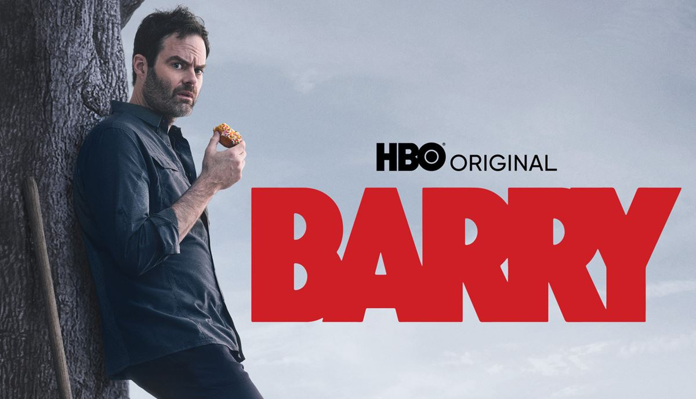

Barry Berkman es un ex-marine y sicario profesional que viaja a Los Ángeles por un encargo. Al seguir a su objetivo, termina por accidente en una clase de actuación. Sorprendido por el sentido de comunidad y el deseo de cambiar, Barry decide dejar su vida de asesino a sueldo para convertirse en actor. Sin embargo, su pasado criminal y sus antiguos contactos se niegan a dejarlo ir, obligándolo a hacer malabares de forma violenta y cómica entre los dos mundos.